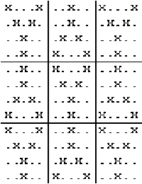
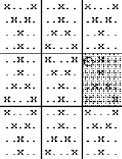

AP Computer Science
Quilt
A patchwork quilt can be made by sewing together many blocks, all of the same size. Each individual block is made up of a number of small squares cut from fabric. A block can be represented as a two-dimensional array of nonblank characters, each of which stands for one small square of fabric. The entire quilt can also be represented as a two-dimensional array of completed blocks. The example below shows an array that represents a quilt made of 9 blocks (in 3 rows and 3 columns). Each block contains 20 small squares (of 4 rows by 5 columns). The quilt uses 2 different fabric squares, represented by the characters 'x' and '.'. We consider only quilts where the main block alternates with the same block flipped upside down (i.e., reflected about a horizontal line through the block's center), as in the example below.

Consider the problem of storing and displaying information about a quilt.
The class Quilt, whose declaration is shown below, is used to keep track of the blocks for an entire quilt. Since the pattern is based on one block, we only store that block and the number of rows and columns of blocks. For the example shown above, we would store the upper left 4 x 5 block, 3 for the number of rows of blocks in the quilt and 3 for the number of columns of blocks in the quilt.
public class Quilt { char[][] myBlock; // stores pattern for one block int myRowsOfBlocks; // number of rows of blocks in the quilt int myColsOfBlocks; // number of columns of blocks in the quilt // precondition: quiltBlock refers to an initialized quilt block, // rowsOfBlocks > 0, colsOfBlocks > 0 // postcondition: myRowsOfBlocks and myColsOfBlocks are initialized to // the number of rows and columns of blocks that make up // the quilt; myBlock has been initialized to the block // pattern of quiltBlock. public Quilt(char[][] quiltBlock, int rowsOfBlocks, int colsOfBlocks) { /* to be completed in part (a) */ } // precondition: startRow >= 0; startCol >= 0; // startRow + myBlock.length <= qmat.length; // startCol + myBlock[0].length <= qmat[0].length; // postcondition: myBlock has been copied into the matrix // qmat with its upper-left corner at the position // startRow, startCol public void placeBlock(int startRow, int startCol, char[][] qmat) { } // precondition: startRow >= 0; startCol >= 0; // startRow + myBlock.length <= qmat.length; // startCol + myBlock[0].numcols() <= qmat[0].length; //postcondition: a flipped version of myBlock has been copied into the // matrix qmat with its upper-left corner at the position // startRow, startCol public void placeFlipped( int startRow, int startCol, char[][] qmat ) { /* to be completed in part (b) */ } public char[][] quiltToMat() // checkerboard alternation { /* to be completed in part (c) */ } }
- Write the code for the constructor that initializes a quilt, as started below. The constructor copies the block pattern for the main block from a two dimensional character array referenced by the parameter quiltBlock. You may assume the matrix is initialized and contains the characters representing the pattern. For example, the array quiltBlock, which contains the pattern for the first block in the quilt shown above, would look like this:
x...x .x.x. ..x.. ..x..The constructor also sets the number of rows and columns of blocks which make up the entire quilt.
Complete the constructor below. Assume that the constructor is called only with parameters that satisfy its precondition.
// precondition: quiltBlock refers to an initialized quilt block, // rowsOfBlocks > 0, colsOfBlocks > 0 // postcondition: myRowsOfBlocks and myColsOfBlocks are initialized to // the number of rows and columns of blocks that make up // the quilt; myBlock has been initialized to the block // pattern of quiltBlock. public Quilt(char[][] quiltBlock, int rowsOfBlocks, int colsOfBlocks)- Write the private member method placeFlipped, as started below. placeFlipped is intended to place a flipped (upside-down) version of the block into the matrix qmat with the flipped block's upper left corner located at the startRow, startCol position in qmat.
For example, if quilt quilt contains the block shown in part (a) and if mat is a matrix large enough to hold the characters in the whole quilt, then the call
quilt.placeFlipped(4, 10, mat)
would place the flipped version of quilt's quilt block into matrix mat as the third block in the second row of quilt blocks. This is the block whose upper-left corner is at position mat[4][10]. In the diagram below, the upper-left corner of the flipped block being placed into mat is circled.

You may adapt the code of the member method placeBlock, given below, which places the block (not inverted) into the matrix qmat with the block's upper left corner located at the startRow, startCol position.
// precondition: startRow >= 0; startCol >= 0; // startRow + myBlock.length <= qmat.length; // startCol + myBlock[0].length <= qmat[0].length; // postcondition: myBlock has been copied into the matrix // qmat with its upper-left corner at the position // startRow, startCol public void placeBlock(int startRow, int startCol, char[][] qmat) { for ( int r = 0; r < myBlock.length; r++ ) { for ( int c = 0; c < myBlock[r].length; c++ ) { qmat[startRow + r][startCol + c] = myBlock[r][c]; } } }Complete the member method placeFlipped below. Assume that placeFlipped is called only with parameters that satisfy its precondition.
// precondition: startRow >= 0; startCol >= 0; // startRow + myBlock.numrows() <= qmat.numrows(); // startCol + myBlock.numcols() <= qmat.numcols(); // postcondition: a flipped version of myBlock has been copied into the // matrix qmat with its upper-left corner at the position // startRow, startCol public void placeFlipped( int startRow, int startCol, char[][] qmat ) { for ( int r = 0; r < myBlock.length; r++ ) { for ( int c = 0; c < myBlock[r].length; c++ ) { } } }- Write the member method quiltToMat, as started below. quiltToMat returns a matrix representing the whole quilt in such a way that the main block alternates with the flipped version of the main block, as shown in the original example. If quilt represents the example quilt, then the call quilt.quiltToMat() would return a matrix of characters with the given block placed starting with the upper-left corner at position 0, 0; the flipped block placed with its upper-left corner at position 0, 5; the given block placed with its upper-left corner at position 0, 10; the flipped block placed with its upper-left corner at position 4, 0, and so on.
In writing quiltToMat, you may call functions placeBlock and placeFlipped specified in part (b). Assume that placeBlock and placeFlipped work as specified, regardless of what you wrote in part (b).
Complete the member method quiltToMat below.
public char[][] quiltToMat()